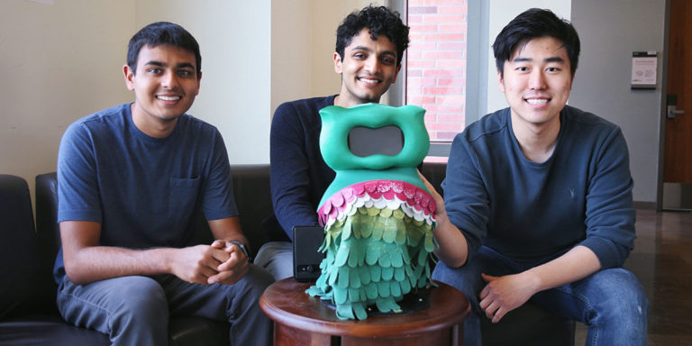

Kiwi: Ajudando crianças com autismo a desenvolverem habilidades sociais
Muitas crianças com autismo sofrem com a dificuldade no aprendizado e atrasos no desenvolvimento, incluindo interação social, comunicação e comportamento. Isso torna o aprendizado de novas habilidades um grande desafio, que não costuma ser muito bem trabalhado nas escolas tradicionais. Ao saber dos obstáculos enfrentados por esse grupo, pesquisadores desenvolveram o Kiwi, um pequeno robô de aprendizado personalizado para crianças autistas.
Como parte do estudo, a equipe da Universidade do Sul da Califórnia (USC) instalou o “robô socialmente assistente" na residência de 17 crianças autistas, para saber se conseguiriam medir o interesse demonstrado por uma criança para uma determinada tarefa.

Durante um mês, as crianças que participaram do estudo foram desafiadas com jogos de matemática de temas especiais em um tablet, enquanto o Kiwi fornecia feedback e instruções, como dar dicas após uma resposta errada ou parabenizá-las por um acerto. Conforme as lições avançavam, os algoritmos ajustavam o feedback do robô e a dificuldade dos jogos para cada criança, de acordo com suas necessidades individuais. Para adaptá-las, o aparelho usava aprendizado de máquina.
Muitas crianças com autismo sofrem com a dificuldade no aprendizado e atrasos no desenvolvimento, incluindo interação social, comunicação e comportamento. Isso torna o aprendizado de novas habilidades um grande desafio, que não costuma ser muito bem trabalhado nas escolas tradicionais. Ao saber dos obstáculos enfrentados por esse grupo, pesquisadores desenvolveram o Kiwi, um pequeno robô de aprendizado personalizado para crianças autistas.
Como parte do estudo, a equipe da Universidade do Sul da Califórnia (USC) instalou o “robô socialmente assistente" na residência de 17 crianças autistas, para saber se conseguiriam medir o interesse demonstrado por uma criança para uma determinada tarefa.

Durante um mês, as crianças que participaram do estudo foram desafiadas com jogos de matemática de temas especiais em um tablet, enquanto o Kiwi fornecia feedback e instruções, como dar dicas após uma resposta errada ou parabenizá-las por um acerto. Conforme as lições avançavam, os algoritmos ajustavam o feedback do robô e a dificuldade dos jogos para cada criança, de acordo com suas necessidades individuais. Para adaptá-las, o aparelho usava aprendizado de máquina.
Ao final do mês, os cientistas analisaram o envolvimento dos participantes e notaram que o robô teve 90% de precisão em detectar o interesse da criança. Isso foi comprovado com uma série de dados como posição da cabeça, desempenho na tarefa, contato visual com o Kiwi e tom de voz. No final do estudo, todas as crianças obtiveram melhora em suas habilidades matemáticas, e 92% delas tiveram avanços positivos na capacidade social. Os resultados foram publicados nas revistas Frontiers in Robotics and AI e Science Robotics.
| Informações adicionais | |
|---|---|
| Custo | US$ 4.500 |
| Altura | 30 cm | Aparência | Customizável através de skins |
| Site | http://robotics.usc.edu/interaction/robots/ |